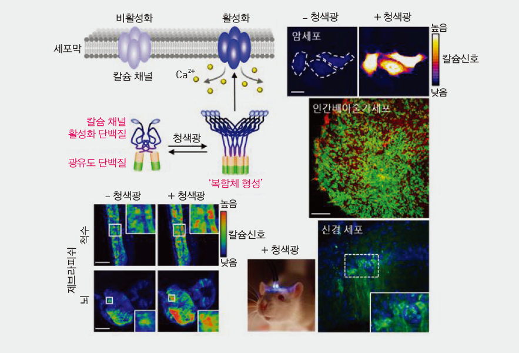

Report by Subjects
Report by Subjects
KAIST RESEARCH ACHIEVEMENTS
Optogenetic Control of
Ca2+ channels in vivo
Department of Biological Sciences
Won Do HeoㆍDaesoo KimㆍYong-Mahn Han
Summary
In the year 2040, exposure to light is all that is needed to treat diseases linked to intracellular Ca2+ dysfunction, especially neurological diseases such as Alzheimer’s disease. It takes only 10 minutes of exposure to lukewarm red light to restore a patient’s priceless memories with their family.
R&D Report
Calcium (Ca2+) signals are a crucial part of diverse cellular functions, including contraction, excitation, growth, differentiation, and death. In this study, a light-responsive plant protein was conjugated with a Ca2+ channel activator to induce an influx of Ca2+ into cells through exposure to light. This protein, called OptoSTIM1, has proven its broad utility by making it possible to modulate Ca2+ levels in various cell lines, including human embryonic stem cells, and animal models, such as zebrafish embryos and mice.
Recent evidence suggests that abnormal Ca2+ channel activity is involved in various human diseases, and severe Ca2+ deficiency has been linked to cardiac arrhythmia, cognitive impairment, and ataxia. Also, there is a great need for the development of non-invasive means of manipulating intracellular Ca2+ levels for therapeutic purposes, such as via light exposure, instead of utilizing toxic chemicals or electrical shocks.

Fig 1.a) Schematics of Ca2+ channel activator (OptoSTIM1)
b) Increase of Ca2+ level in human cancer cells
c) Expression of OptoSTIM1 (green) in human embryonic stem cells (hESCs)
d) Elevation of Ca2+ in the central nervous system of a zebrafish embryo
e) Selective expression of OptoSTIM1 (green) in the hippocampal region of a mouse brain.
The precise control of Ca2+ channels through the use of OptoSTIM1 will provide a robust cell- or animal-based screening platform for identifying drug candidates that target Ca2+ channels. OptoSTIM1 also offers potential optogenetic therapeutic means of treating diseases associated with Ca2+ deficiency.
Research Funding
ㆍThis research was supported by the Institute for Basic Science (IBS-R001-G1), KAIST Institute for the BioCentury, the National Leading Research Laboratory Program of the Ministry of Science, ICT and Future Planning (MSIP) (2011-0028772 to Daesoo K.), and the NRF Stem Cell Program(2011-0019509), which is funded by the MSIP.
Research Outcomes
ㆍOptogenetic control of endogenous Ca2+ channels in vivo . Nature Biotechnology, 23, 1092-1096 (2015).